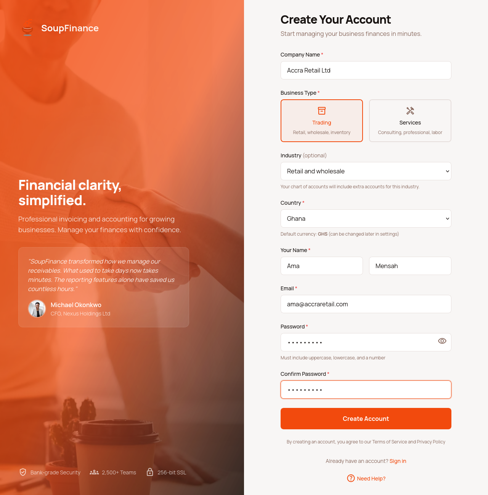
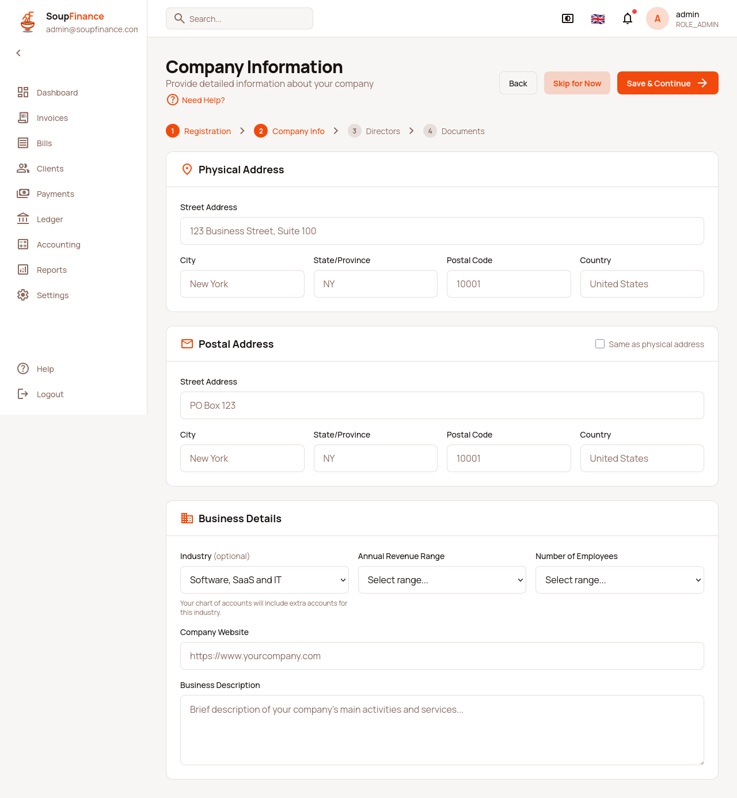

SOUPFIN-151 — Account.industry as a first-class field
Backend plan for soupmarkets-web, branch authentication-base-on-multi-tenancy-descriminator. Written 2026-10-12 from the SoupFinance repository, which may not change backend code (.claude/rules/backend-changes-workflow.md). The frontend half (P1) ships with this plan.
Account.industry as one of 16 fixed codes. Registration and account update accept it, account show returns it, and registration passes it to the chart-of-accounts composer whenever an overlay applies to the tenant's business type.1. What was wrong
- Registration never sent an industry.
AccountRegistrationCommandhas no such field, andAccountController.registerbuilds the command field by field, so an extra key in the JSON is ignored. - The onboarding Company Information page put the industry label inside a JSON string called
metadataonPUT /rest/corporate/update.Corporatehas nometadataproperty, so the value was dropped silently. Corporate.industryexists, but it is aClientIndustryreference: a per-tenant lookup table for classifying KYC clients. A new tenant has no rows in it, and its names are free text, so it cannot pick a COA overlay. This plan leaves it alone.
2. Parts
| Part | What | Status |
|---|---|---|
| P1 | Frontend: codes in soupfinance-web/src/utils/industry.ts, the shared IndustrySelect, industry in the register payload, Company Information writes Account.industry, industryOverlayFor() for the picker | done |
| P2 | Account.industry column and migration | todo |
| P3 | Registration command, controller and service | todo |
| P4 | Show and update | todo |
| P5 | Industry overlay at registration | todo |
| P6 | Specs | todo |
| P7 | Template picker preselects the overlay (SOUPFIN-147) | todo |
3. The codes
Lower-case, hyphenated. Where a COA overlay exists, the code is the overlay key in plans/coa-templates/industry/*.json, so no mapping table can drift. A frontend unit test reads those JSON files and fails if the two disagree.
| Code | English label | COA overlay applies to |
|---|---|---|
agriculture | Agriculture and farming | none |
construction | Construction and real estate | SERVICES, TRADING |
education | Education and training | none |
energy | Energy and utilities | none |
financial-services | Financial services | none |
healthcare | Healthcare and pharmaceuticals | none |
hospitality | Hospitality and tourism | SERVICES, TRADING |
manufacturing | Manufacturing | none |
mining | Mining and natural resources | none |
non-profit | Non-profit | SERVICES |
professional-services | Professional services | SERVICES |
retail | Retail and wholesale | TRADING |
saas | Software, SaaS and IT | SERVICES |
telecommunications | Telecommunications | none |
transportation | Transport and logistics | none |
other | Other | none |
4. Backend changes
P2 — Account.industry
// grails-app/domain/soupbroker/Account.groovy
/** Industry code (SOUPFIN-151). Picks the COA industry overlay when one applies. */
String industry
static final List<String> INDUSTRY_CODES = [
'agriculture', 'construction', 'education', 'energy', 'financial-services', 'healthcare',
'hospitality', 'manufacturing', 'mining', 'non-profit', 'professional-services', 'retail',
'saas', 'telecommunications', 'transportation', 'other'].asImmutable()
// constraints
industry nullable: true, inList: INDUSTRY_CODESMigration in lxc/migrations/: ALTER TABLE account ADD COLUMN industry VARCHAR(32) NULL;. No backfill: existing tenants stay NULL, which means "no overlay".
P3 — Registration
AccountRegistrationCommand: addString industrywithindustry nullable: true, inList: Account.INDUSTRY_CODES. An unknown code then returns the usual 422 witherrors.industry, whichRegistrationPagealready renders per field.AccountController.register: addindustry: jsonData.industryto the command it builds.AccountRegistrationService.register: setindustry: cmd.industryon the newAccount.
country, which the frontend has sent since registration gained the Country select. Account.countryOfOrigin stays empty, so the Ghana tax overlay cannot be chosen at registration either. Filed as SOUPFIN-240.P4 — Show and update
_account.gsonbackfills keys the generic template drops when null. Addindustryto that list, so/account/show/{id}.jsonalways carries the key.AccountController.updatebinds the domain from the request, so the new property binds once it exists. The frontend sendsPUT /account/update/{id}.jsonwith body{"id": "account-001", "industry": "saas"}, after reading CSRF from/account/edit/{id}.json.
P5 — Overlay at registration
Where registration seeds the chart (SOUPFIN-144), pass the overlay only when it applies, mirroring industryOverlayFor() on the frontend:
String overlay = coaTemplateService.industryAppliesTo(account.industry, account.businessLicenceCategory) ?
account.industry : null
coaTemplateService.compose(account.businessLicenceCategory, country, overlay)An industry with no overlay, or one that does not fit the business type (retail on SERVICES), seeds the base chart. Registration must not fail on it: the SOUPFIN-145 overlay-not-applicable error is for applyTemplate, where the user picked the overlay on purpose.
P6 — Specs
| Case | Expected |
|---|---|
Register with industry: "retail", TRADING | 200; Account.industry == 'retail'; chart includes the retail accounts (1030 Till Floats) |
Register with industry: "retail", SERVICES | 200; industry stored; base SERVICES chart, no 1030 |
Register with industry: "agriculture" | 200; industry stored; base chart |
Register with no industry key | 200; industry is null |
Register with industry: "" or "Retail & Wholesale" | 422, errors.industry; no Account row created |
Register with a 10,000-character industry | 422, errors.industry; no truncation, no 500 |
GET /account/show on a tenant with null industry | Body has "industry": null |
PUT /account/update with industry: "saas" | 200; a second show returns saas |
5. Frontend (done, P1)


- Registration omits
industrywhen none is chosen, so the backend never sees"". - Company Information writes only when the industry changed. It never sends
industryto/rest/corporate/update, because that would try to bind aClientIndustryreference. - Until P2 to P4 ship, the backend ignores the field: registration works, and
/account/updateanswers 200 without storing it.
6. Template picker (P7, SOUPFIN-147)
The picker should call industryOverlayFor(account.industry, account.businessLicenceCategory) from src/utils/industry.ts and preselect the result. It returns null when no overlay applies, in which case the picker preselects none.
7. Related
- Registration drops
country(section 4, P3 note): filed as SOUPFIN-240. plans/soupfin-146-coa-backfill.htmlskips the industry overlay because no field existed. Once P2 ships, a tenant that sets its industry later can add the overlay through SOUPFIN-145applyTemplate.